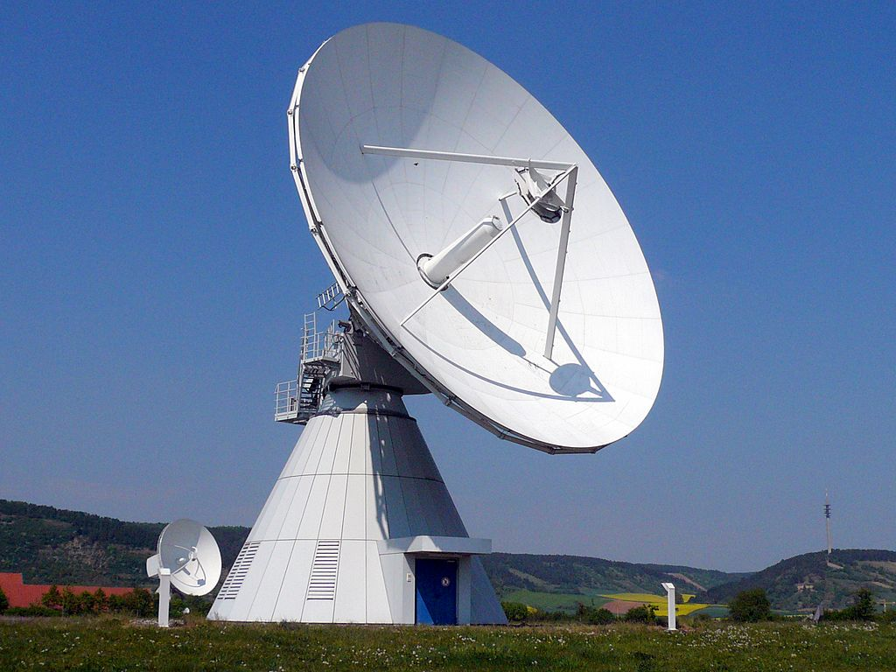
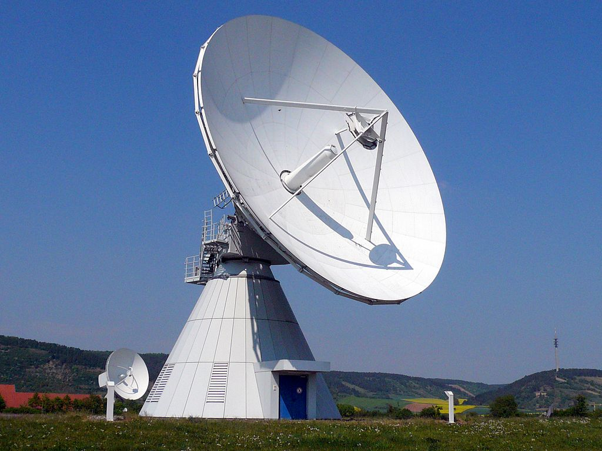

Welcome to
LEOCONN 2021
Networking in low Earth orbit is heating up in two exciting ways. First, several companies are deploying thousands of satellites to provide truly global Internet connectivity, with broadband speeds and low latency. Second, there is explosive growth in satellites and ground station networks to cater to a variety of Earth imaging services. This 2-day seminar brings together industry and academia to explore system design, networking, and security, in both these applied areas of LEO networking.
 

Speakers
LEOCONN speakers have deep technical expertise across satellite and ground system design, cloud integration, networking technologies, and security, and come both from industry and academia.

Giacomo Giuliari
PhD student
Network Security Group, ETH Zürich
Researching secure and efficient architectures to integrate satellite megaconstellations with the terrestrial Internet.
Schedule
Each talk will be followed by a brief Q/A session.
Note: all times are in UTC.
-
Day 01
June 09, 2021
-
Day 02
June 10, 2021
Ankit Singla
ETH ZürichOpening - Day 1: Welcome notes.
Welcome to LEOCONN 2021! I will very briefly describe the boom in both imaging and broadband applications of LEO networking, and summarize numerous open networking research challenges relevant to many of the key players in the LEO ecosystem. My talk will thus lay out the framing for the rest of the program.
Melissa Licciardello
ETH ZürichIn-orbit computing: an outlandish thought experiment?
Space industry upstarts are deploying thousands of satellites to offer global Internet service. These plans promise large improvements in coverage and latency, and could fundamentally transform the Internet. But what if this transformation extends beyond network transit into a new type of computing service? What if each satellite, in addition to serving as a network router, also offers cloud-like compute, making the new constellations not just global Internet service providers, but at the same time, a new breed of cloud providers offering "compute where you need it"?
Deepak Vasisht
UIUCLow Latency Data Downlink for LEO Satellites
Large constellations of Low Earth Orbit satellites promise to provide near real-time high resolution Earth imagery. Such constellations will collect terabytes of data that needs to be shipped to Earth. Getting this data to Earth is challenging and can often take several hours to days before it is available to the user. This defeats the purpose of large constellations and frequent imagery and can be crippling to latency sensitive applications like disaster management and geopolitical analysis. In this talk, I will discuss our use of edge computing and distributed ground station architectures to reduce the latency in accessing earth observation data from hours to minutes.
Yves Pitsch
MicrosoftGround Stations' digital transformation
This session will demonstrate how adoption of virtualization and integration with cloud hyper-scalers high-performance networks will help minimize the ground segment design and operation costs, allowing more scale and flexibility to meet new requirements.
Katherine Monson
KSAT Inc.Cloud-based Ground Station as a Service (GSaaS)
As satellite constellations increasingly require flexible and scalable capabilities, this presentation highlights the advantages of using an existing ground station network transformed into a globally integrated "ground station cloud" as opposed to the traditional ground station networks primarily designed to support the needs of one or few satellites with consistent contact needs.
Kiruthika Devaraj
Planet LabsPlanet's High Speed Downlink Network: Employing agile aerospace to download 20 TB daily imagery from the Dove constellation
In this talk, I will start with providing an overview of Planet Labs, our founding mission, and a summary of what Planet has built to-date to serve the Earth Observation/Geospatial community. In the second part of the talk, I will focus on the satellite communication network reliability and the throughput requirements that are needed to meet a mission as large as Planet's. I follow that with discussing how Planet has effectively tackled these objectives by using the agile aerospace philosophy of rapid prototyping and iterative design.
1. Drastically fast and reliable commanding and tasking ability with our satellites. Today, we are able to successfully make first contact with 50+ satellites within a single orbit when we launch them as a large constellation as well as finish commissioning our satellites within 10 days after first contact. This is enabled by our low speed transceiver (LST) which is an open source project.
2. Extremely high download capability. Today, Planet is able to reliably downlink 20TB of imagery from our satellites per day with the high speed radio and ground network.
Industry Panel Discussion
Topic: Opportunities and challenges in LEO networking.
Panelists:
Yves Pitsch (Microsoft)
Katherine Monson (KSAT Inc.)
Kiruthika Devaraj (Planet Labs)
Gint Atkinson (SES Satellites)
Host: Ankit Singla (ETH Zürich)
Ankit Singla
ETH ZürichOpening - Day 2: Welcome notes.
I will kick-off day 2, where the focus is on the ``LEO constellations for providing broadband'' aspect.
Debopam Bhattacherjee
ETH ZürichOn improving low-Earth orbit satellite network performance
Upstart space companies are building massive constellations of low-flying satellites to provide Internet service. These developments comprise “one giant leap” in Internet infrastructure, promising global coverage and lower latency. However, fully exploiting the potential of such satellite constellations requires tackling their inherent challenges: thousands of low-Earth orbit (LEO) satellites travel at high velocities relative to each other, and relative to terrestrial ground stations. The resulting highly-dynamic connectivity is at odds with the Internet’s design, which assumes a largely static core infrastructure. Virtually every aspect of Internet design — physical interconnection, routing, congestion control, and application behavior — will need substantial rethinking to integrate this new building block.
I will also present Hypatia, a framework for simulating and visualizing LEO networks, that we built to enable broader research in this area. Using publicly available design details for the upcoming networks to drive our framework, we characterize the expected behavior of these networks, including latency and link utilization fluctuations over time, and the implications of these variations for congestion control and routing.
Manfred Leipold
MynaricIndustrializing Laser Communications
Mynaric’s communication system works by utilizing an accurately steered infrared laser beam to transmit data unguided through air and space, allowing for greatly superior performance parameters than competing RF communication systems. Unlike RF signals, the technology is license-free and virtually tap-proof. After having developed laser terminal for optical ground stations and aeronautical platforms for more than 12 years, Mynaric has matured and qualified a 10Gbps product for optical inter-satellite-links in Low Earth Orbit and a comparable product for communications use on next-generation flying platforms. The presentation will highlight some of the products developed by Mynaric with selected technical features, and will elaborate on related qualification efforts for space environment compatibility. In parallel to product qualification and serial manufacturing various subsystems have been identified for technology scouting. These are currently being prototyped, with selected strategic technology partners, in order to evolve the next generation of laser communication terminals for air and space.
Gint Atkinson
SES SatellitesOrchestrating 5G from space to deliver content and connectivity everywhere
5G is rapidly driving the evolution of new fixed and mobile services all converged on a unified core with diverse access networks including Satellite, enabling efficient and ubiquitous connectivity to the edge of the network. A unified core network from 5G offers Satellite Network Operators and Service Providers access to the economies of scale and scope that are driven at the mega scale of wireless and telco markets along with the ability to rapidly deliver and control advanced network and mobility aware services such as network slice connectivity and remote edge. The combination of the 5G Core with software defined network (SDN) controllers, service orchestrators, ORAN, ONAP, operated in the Cloud for unrivalled scalability and flexibility, paves the way for innovative and disruptive satellite services.
Giacomo Giuliari
ETH ZürichOn integrating satellite networks into Internet routing
Internet service based on low Earth orbit satellites promises to bring global low-latency connectivity and broadband access to rural areas. These two use-cases alone are enough to stir great excitement in industry and academia. However, we argue that for exploiting their full potential, we should tightly integrate satellite networks with the terrestrial Internet.
Beyond the efficiency of routing, I will also discuss its security. I will describe ICARUS, a distributed denial-of-service attack that can potentially hamper satellite communications between a large number of hosts. ICARUS turns a satellite networks' key benefits into vulnerabilities: the adversary can leverage the direct global accessibility to launch an attack from numerous locations, while the quest for low latency constrains routing, and provides predictability to the adversary.
Lastly, I will outline ongoing work on improving the security and resilience of satellite networks by incorporating ideas from the fields of secure routing, distributed algorithms, and quality of service.
James Pavur
Oxford UniversityLEO Lessons from Hacking GEO Broadband
This talk discusses threats and security vulnerabilities impacting the security and privacy of customers using modern VSAT broadband services from GEO. In it, we see how adaptations to the physical dynamics of space have incentivized poor security practices. The result is that terabytes of deeply sensitive information, ranging from data belonging to Fortune 500 companies to individual passengers aboard aircraft, are available to attackers using simple home-television equipment. We demonstrate these attacks on real-world systems, showing how minor shifts in threat-models can significantly impact the security of space networks. By delving into the underlying causes of these issues, we detail how studying the security mistakes in these older GEO systems can help inform our efforts to design more secure and robust next-generation LEO networks.